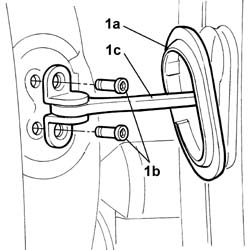
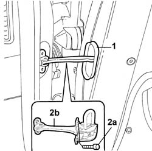

7010A28 Rear side DOOR CHECK STRAP - R.R.
- Path
- Procedures > 70 FITTINGS > 7010 passenger compartment rear side doors > 7010A REAR SIDE DOORS ASSEMBLY > 7010A28 Rear side DOOR CHECK STRAP - R.R.
- Kind
- repair procedure (removal / refitting; the operation number is the code)
- Applies to
- all engines; all production periods
- Interactive page
- https://sloeber94.github.io/elrnDB-lThss/en/#/80003
Applies to: all engines; all production periods
 Removing
Removing
 Refitting
Refitting- Disconnect the negative battery terminal.
See in Op. 7010M10 Rear door electric window control SWITCH - left or right - R.R.
See in Op. 7010E10 Rear side door INNER PANEL - R.R. or Replace
See in Op. 5570T93 Rear side SPEAKER (one), left or right - R.R. with door panel removed
-
See in Op. 7010A04 Rear side door WATER GUARD PROTECTION - R.R. or Position with door panel removed
1. Remove the plastic protection (1a), undo the fixing bolts (1b), door pillar side, and release the plastic protection from the door check strap (1c).

Applies to: all engines; all production periods
1. Release the rubber protection and remove it.
2. Undo the fixing bolts (2a) and remove the door check strap (2b).

Applies to: all engines; all production periods
Refitting
Removing- Position the check strap and tighten the door side fixing bolts.
- Fit the rubber protection and cover the door side fixing bolts.
- Tighten the check strap fixing bolts, door pillar side.
- Cover the door pillar side fixing bolts with the rubber protection.
See in Op. 7010A04 Rear side door WATER GUARD PROTECTION - R.R. or Position with door panel removed
See in Op. 5570T93 Rear side SPEAKER (one), left or right - R.R. with door panel removed
-
See in Op. 7010E10 Rear side door INNER PANEL - R.R. or Replace
See in Op. 7010M10 Rear door electric window control SWITCH - left or right - R.R.
- Connect the negative battery terminal.